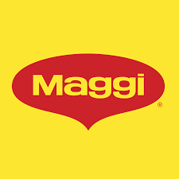
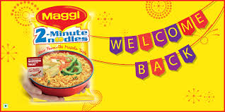

How India's instant noodle giant built emotional ownership and executed crisis recovery mastery.

Maggi mastered emotional consolidation + crisis recovery: Me & Meri Maggi (30K stories) built ownership, #WelcomeBackMAGGI (79% trust recovery) rebuilt market dominance.
Case study analyzes relationship-building through participation and trust restoration through emotional timing. FMCG crisis management + brand love blueprint.
Truth: Indians don't eat Maggi—they live it.
Insight: Maggi already owned moments. Strategy: amplify existing relationship. Situation-based targeting (hostels, late nights) > demographics. "Your Maggi" flipped seller to partner.
30K+ user stories created emotional investment. TV/print/digital + social voting/tagging = participation explosion. Content loop: users → brand → more users.
"Customers became storytellers. When people tell your story, credibility skyrockets, costs plummet. Top-funnel dominance through emotional equity."
Funnel mastery: Awareness → Story submission → Voting → Personalized packs → Brand love. Long-term equity > short-term sales.
Ban crisis insight: people missed Maggi. Response: "#WeMissYouToo" acknowledged emotion before facts. Everyday contexts (hostels, kitchens) grounded comeback in reality.
Digital-first emotional reconnection → distribution relaunch. No technical explanations—just relationship restoration. 60% market share recovery, instant sell-outs.
"Emotion before logic in crisis. Perfect timing + tone rebuilt 79% trust. Demand → emotional reactivation → availability = market dominance restored."
Funnel precision: Absence demand → Emotional messaging → Product availability → Trust metrics → Sales explosion. Crisis converted to opportunity.

Me & Meri scaled pre-existing love. Don't invent—consolidate emotional equity.
Hostel nights > age groups. Life moments drive stronger connections than demographics.
30K stories = credibility multiplier. Customers as storytellers > brand monologue.
#WeMissYouToo acknowledged feelings first. Trust rebuilds through empathy, not explanation.
Digital emotion → distribution relaunch. Marketing + operations alignment = explosive recovery.
Stories → voting → sharing → more stories. Participation loops reduce acquisition costs.
Maggi perfected emotional FMCG: Me & Meri Maggi consolidated 30K stories into ownership, #WelcomeBackMAGGI recovered 79% trust + 60% market share. Noodles became life moments.
Universal blueprint: scale existing relationships + emotion-first crisis recovery. Maggi proved Indians choose brands they live with, not just eat from.
Great brands turn customers into storytellers.
At Brand Business Talk, we help brands with research, strategy, market insights, and growth recommendations. Let's build your brand growth strategy together.